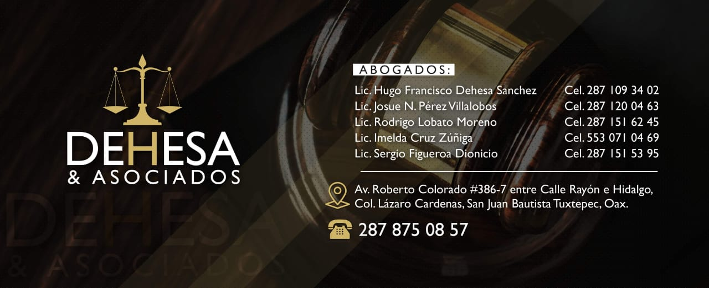

Desde nuestra fundación en 2000, nuestra política y filosofía de servicio han sido: la
atención personalizada de los clientes, la comunicación oportuna con estos, la objetividad
en el ejercicio profesional y la confidencialidad de la información que nos es revelada.
Las opiniones emitidas sobre los asuntos que se nos presentan a estudio, se sustentan
siempre en un análisis profundo de todas las variables posibles, integrando distintas
áreas jurídicas, para ofrecer alternativas que impliquen menores riesgos y costos.
En DEHESA & ASOCIADOS, S.C. dominamos distintas áreas del Derecho, contamos con amplia
experiencia en litigio y tenemos una mentalidad empresarial. Atributos que nos
convierten en un invaluable aliado.
La Firma mantiene corresponsalías en distintas ciudades:
México: PUEBLA, MEXICO, GUADALAJARA, LA PAZ, TIJUANA.
EUA: SAN DIEGO
América Latina: PANAMA
En Dehesa & Asociados, nos preocupamos por asesorarle en la prevención de riesgos y
controversias; sin embargo, estamos preparados para proteger los derechos e intereses de
nuestros clientes, de una manera responsable y oportuna, en caso de litigio.
En cualquier caso, nuestros servicios comprenden:
• Estudio del asunto.
• Planteamiento de la acción o de la defensa.
• Trámite y seguimiento del juicio en todas sus instancias.
• Juicio de Amparo, promoción y seguimiento.
• Procedimientos de ejecución.
• Además, la Firma ha participado activamente en el trámite de cartas rogatorias para la
ejecución de actos de naturaleza procesal e incluso para la ejecución de laudos arbitrales
dictados en el extranjero; así como juicios arbitrales.
Entre las actividades de la Firma en esta área se incluyen la preparación y negociación de
contratos y convenios de carácter civil y mercantil. En forma complementaria se proporciona
asesoría relacionada con la Ley Federal de Competencia Económica, así como en áreas relacionadas
como la fiscal, laboral, medio ambiente y propiedad industrial, entre otros.
Adicionalmente a la preparación y negociación de los convenios y contratos nominados e
innominados, el área ofrece los siguientes servicios:
• Análisis y soporte a la obtención de autorizaciones, permisos y licencias como resultado de la
celebración de contratos.
• Preparación y resolución de convenios y contratos de accionistas y de coinversión.
• Auditorías legales.
El capital intelectual, constituido por las innovaciones tecnológicas, los signos distintivos y
las creaciones artísticas, debe protegerse de manera estratégica para posicionar
competitivamente a la empresa en el mundo de los negocios.
• Asesoría en la protección de patentes, marcas, nombres de dominio y derechos de autor.
• Consultoría.
• Denominaciones de origen.
• Derechos de autor, artistas, intérpretes.
• Licencias y franquicias.
• Litigio.
• Marcas, nombres comerciales y avisos comerciales.
• Nombres de dominio.
• Patentes, modelos industriales, modelos de utilidad, variedades vegetales y circuitos
integrados.
Con un equipo de abogados que cuentan con más de 25 años de experiencia resolviendo asuntos
fiscales, así como contadores y abogados con estudios de postgrado especializados en la materia,
lo cual nos permite garantizar que estamos brindando a nuestros clientes la estrategia jurídica,
fiscal contable más eficiente y eficaz a sus problemas fiscales específicos.
Defensa Legal a sus diversos problemas fiscales y administrativos relacionados con autoridades
como la SHCP, el SAT, Secretaría de Finanzas, incluidos (Asuntos de Comercio Exterior), IMSS,
INFONAVIT, PROFEPA, SCT, PROFECO, en sus diversas etapas tales como:
Visitas Domiciliarias y Revisiones de Escritorio
Determinación de multas
Embargo de bienes
Requerimientos y sanciones de control de obligaciones
Defensa ante la negativa de Devolución de Impuestos
Condonación, Prescripción, etc.
Defensa Penal Fiscal. (defraudación, contrabando, evasión y elusión fiscal).
Asesoría Contable. (Revisión de Impuestos, revisión de estados financieros, revisión y vigilancia
de presentación de obligaciones fiscales, revisión de flujo de operación, información fiscal)
Planeación fiscal.
En esta área la Firma proporciona servicios legales a patrones o empresas nacionales, con
diversas actividades empresariales, para la implementación y desarrollo de estrategias laborales
que pretendan la optimización de los recursos humanos y materiales, así como el manejo de
contingencias derivadas de las relaciones obrero-patronales.
Algunos de los servicios que presta el área son:
• Atención de inspecciones efectuadas por la Secretaría del Trabajo y Previsión Social y
preparación de documentos requeridos para dicho efecto.
• Auditorías laborales.
• Consultas en materias específicas en participación de utilidades, sustitución patronal,
intermediación laboral, cálculo y pago de prestaciones laborales, tales como vacaciones, prima
vacacional y tiempo extraordinario.
• Intervención en negociaciones individuales para la terminación voluntaria de las relaciones
laborales y su correcta reglamentación.
• Litigio individual y colectivo.
• Negociación colectiva, contratos colectivos de trabajo, conflictos inter gremiales y
emplazamientos a huelga.
• Preparación y celebración de contratos individuales, contratos colectivos y reglamentos
interiores de trabajo.
Dentro de la Firma esta área se encarga de la atención de asuntos de naturaleza penal vinculados
básicamente al ámbito empresarial y, al día de hoy, cuenta con el apoyo de investigadores
profesionales y de peritos especializados en diversas ciencias, además de la valiosa
intervención, en caso necesario, de otras áreas de la Firma a efecto de brindar un asesoramiento
integral y garantizar la obtención de los mejores resultados posibles.
El área penal ofrece servicios en los siguientes rubros:
• Atención de procedimientos de extradición ante las autoridades administrativas y judiciales
competentes.
• Atención y asesoría en la defensa de empleados y funcionarios de nuestros clientes en etapa de
averiguación previa y procesos penales a nivel local y federal.
• Auditoría legal a empresas tendiente a prevenir la comisión de ilícitos en su contra y
proporcionar información dirigida a prevenir la actualización de escenarios que permitieran
involucrar a ellas o sus funcionarios, en la comisión de conductas punibles.
• Consultoría.
• Planeación de estrategias para enfrentar adecuadamente periodos de crisis en empresas, así como
aspectos de seguridad de funcionarios y sus familias.
• Preparación y atención de demandas y juicios de amparo en materia penal, incluyendo aspectos
relacionados con el aseguramiento de bienes muebles e inmuebles.
• Preparación y atención de toda clase de denuncias y querellas y procesos penales por conductas
que afecten a las empresas, sus funcionarios y derivadas de sus relaciones con éstos y con
terceros.
• Proceso penal.
La Firma cuenta con amplia experiencia en toda clase de litigios, representando tanto al actor
como al demandado, ante Tribunales Estatales, Tribunales Federales, así como ante Tribunales y
Organizaciones que administran Arbitraje, entre otros.
En el ámbito del derecho civil, la Firma maneja litigios relativos a:
• Responsabilidad civil contractual y extra-contractual.
• Conflictos contractuales.
• Bienes.
• Derechos reales.
Asimismo, la Firma maneja todo tipo de litigios en materia mercantil:
• Concursos mercantiles.
• Aquellos derivados de seguros como fianzas, sociedades mercantiles, etc.
De la misma manera, en materia familiar atiende asuntos tales como:
• Divorcios.
• Alimentos.
• Rectificación de actas.
• Sucesiones.
• Adopciones.
COMERCIO INTERNACIONAL Y ADUANAS
- Asesoría en importación y exportación de mercaderías.
- Obtención de programas de apoyo a la exportación.
- Representación en procedimientos administrativos en materia aduanera y en disputas en materia
de comercio exterior, competencia y prácticas desleales en materia de comercio.
- Tramitación de permisos para la internación al país de trabajadores extranjeros.
- Tramitación de avisos y prórrogas ante la autoridad migratoria.
- Defensa de individuos sujetos a procesos de deportación.
- Obtención de formas migratorias (FM2 y FM3).
- Obtención de permisos para extranjeros con el fin de contraer matrimonio.
- Obtención de cartas de naturalización.
HUGO FRANCISCO DEHESA SANCHEZ
Puesto: Socio. Nacido en Oaxaca, Oax. 1974. Educación: Universidad Autónoma de Oaxaca
(Licenciado En Derecho) Posgrado: Maestría en Derecho Penal UIA (Universidad
Iberoamericana campus Puebla, Pue.) 2004. Seminarios y cursos: Diplomado en derecho
civil. UNAM, 2001, Áreas de Practica: Derecho Penal y Civil.
RICARDO GARCES CAZADERO
Puesto: Asociado. Nacido en Tijuana, B.C. 1973. Educación: Universidad Autónoma de Baja
California, Facultad de Derecho 1996.Posgrado: Universidad de San Diego, Escuela de
Leyes (LLM)2003. Seminarios y cursos: Propiedad Intelectual y Negocios. Áreas de
práctica: Derecho Intelectual, Derecho Corporativo y Migratorio. Idiomas: español e
inglés.
JESUS RAFAEL MENDEZ GARMENDIA
Puesto: Asociado. Nacido en La Paz, B.C. 1975. Educación: Universidad del Valle de
Atemajac (Licenciado en Derecho); Posgrado: Universidad del Valle de Atemajac, 2008
("Maestría en Derecho Corporativo"); Seminarios y Cursos: Instituto Tecnológico de
Estudios Superiores de Occidente, 2007 (Diplomado en Planeación Estratégica y Nueva
Administración Jurídica). Áreas de Práctica: Derecho Corporativo y Derecho Penal.
Idiomas: español e ingles.
JOSE ANTONIO AVALOS GUTIERREZ.
Puesto: Asociado. Nacido en Guadalajara, Jal. 1976. Educación: Universidad de Guadalajara
(Licenciado en Derecho); Universidad del Valle de Atemajac, 2008. Posgrado: "Maestría en
Derecho Corporativo"; Instituto Tecnológico de Estudios Superiores de Occidente, 2007.
Seminarios y Cursos: Diplomado en Planeación Estratégica y Nueva Administración
Jurídica, Universidad de Guadalajara 2005 ("Juicio de Amparo"). Catedrático: Profesor
por oposición de la Universidad Tecnológica de Jalisco, 2006 a la fecha. Áreas de
Práctica: Derecho Corporativo; Propiedad Intelectual; Derecho Inmobiliario; Derecho
Privado. Idiomas: español e inglés.
FRANCISCO EDUARDO GARDUÑO GONZALO.
Puesto: Asociado. Nacido en Puebla, 1972. Educación: Licenciado en Derecho, Escuela Libre
de Derecho de Puebla, A.C., (1991-1996). Cédula Profesional 2871330. Seminarios y
cursos: Diplomado en Inversión Extranjera por COPARMEX Puebla 1996. Curso General de
Propiedad Intelectual por la OMPI 2008. Áreas de Practica: Corporativo, Internacional
Privado, Inversión Extranjera. Idiomas: español e inglés.
ANA DALIA BARAJAS FELIX
Puesto: Asociado. Nacida en Puebla, Pue. 1980. Educación: Abogado Notario y Actuario por
la Benemérita Universidad Autónoma de Puebla, periodo 1999-2003. Posgrado: Maestría en
Derecho Fiscal por la Escuela Libre de Derecho de Puebla, A. C., 2003 -2005. Seminarios
y cursos: Impartición de cursos y conferencias en materia fiscal. Áreas de práctica:
Fiscal y Administrativo. Idiomas: español e inglés.